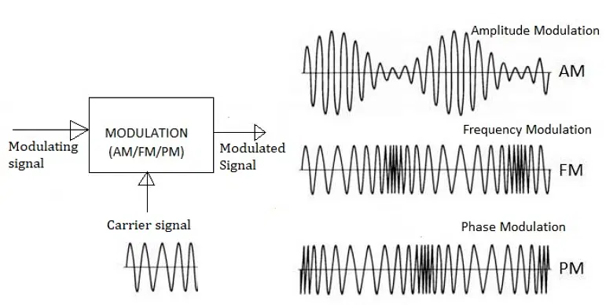
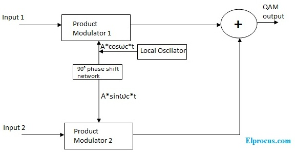

Modulation is the process of varying one or more properties of a carrier signal (usually sinusoidal) with a modulating signal that typically contains information to be transmitted. It allows transmission over long distances, better bandwidth utilization, and reduced noise interference.
🔊 2. Analog Modulation
Amplitude Modulation (AM): Varies the amplitude of the carrier wave.
Frequency Modulation (FM): Varies the frequency of the carrier wave.
Phase Modulation (PM): Varies the phase of the carrier wave.

💻 3. Digital Modulation Techniques
ASK (Amplitude Shift Keying): Digital signal modulates the amplitude.
FSK (Frequency Shift Keying): Digital data is represented by varying frequencies.
PSK (Phase Shift Keying): Phase of the carrier is shifted based on input bits.
QAM (Quadrature Amplitude Modulation): Combines ASK and PSK for higher bit-rates.

🧠 4. Why Modulate?
Efficient Transmission: Antennas become feasible in size (carrier frequency ↑ → antenna length ↓).
Multiplexing: Transmit multiple signals on different frequencies.
Noise Reduction: Some modulation techniques are more resilient to noise (e.g., FM over AM).
🎞️ 5. Modulation Animation
This shows an amplitude modulated signal (AM) — carrier frequency modulated by a message wave.
📊 6. Modulation Comparison Table
Type
Bandwidth
Noise Resistance
Complexity
Usage
AM
2 × Signal BW
Low
Low
AM Radio
FM
Much higher than signal BW
High
Medium
FM Radio
QAM
Efficient
Medium
High
Digital TV, LTE
🧪 7. Quiz Yourself
Q1: Which modulation varies the frequency of the carrier?